29 June 2024

QField
From Laax with love
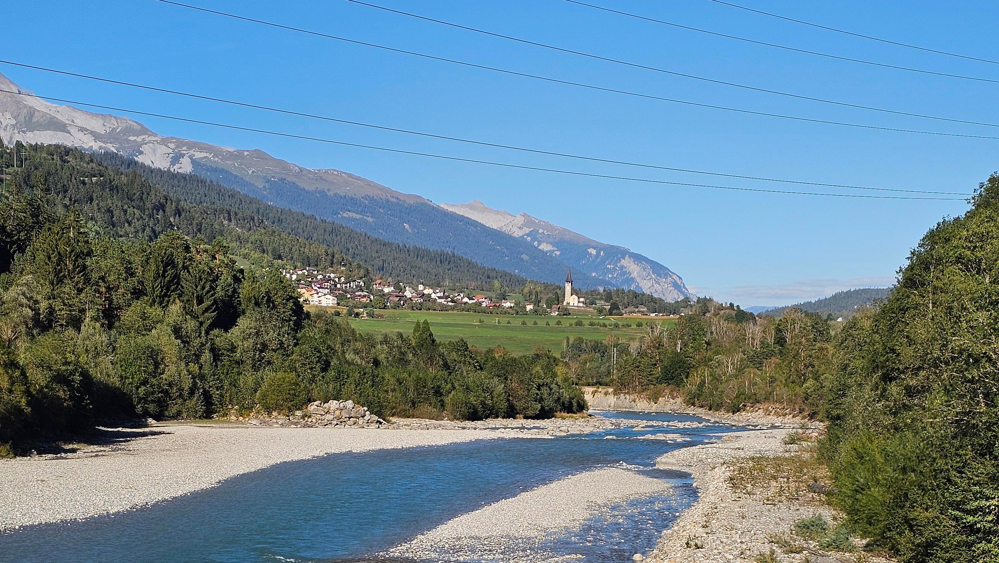
08.06.2011
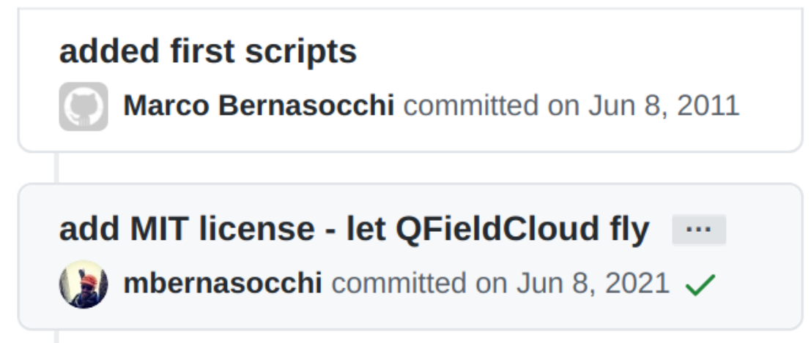
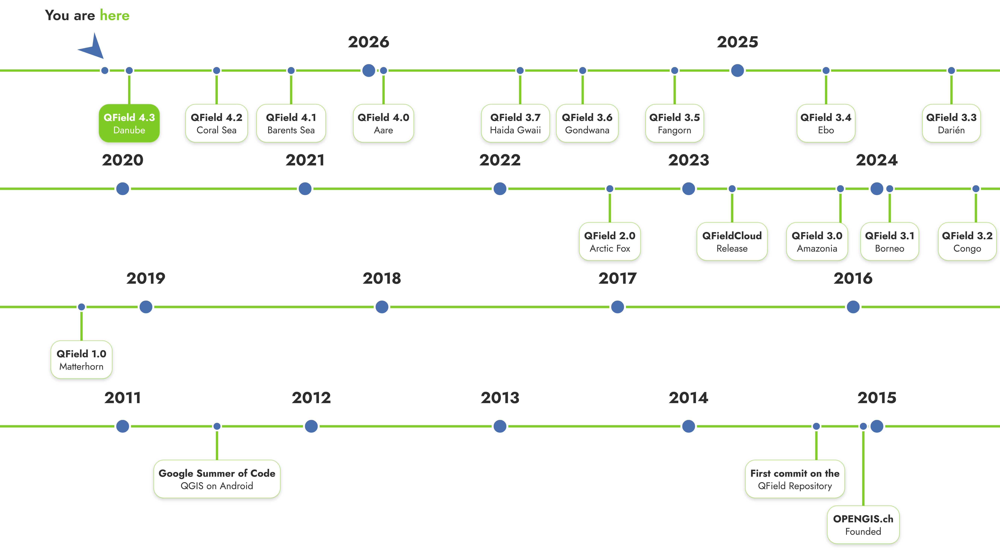
WHERE ARE WE?
4.3 Danube
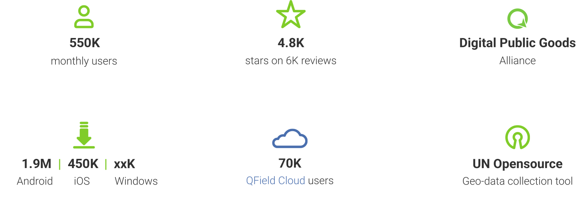
WHY DID WE KNOW WHAT TO DO IN TICINO?
because we had seen it what QField is used for in many other places
TONGA 2022
Cut off from the world
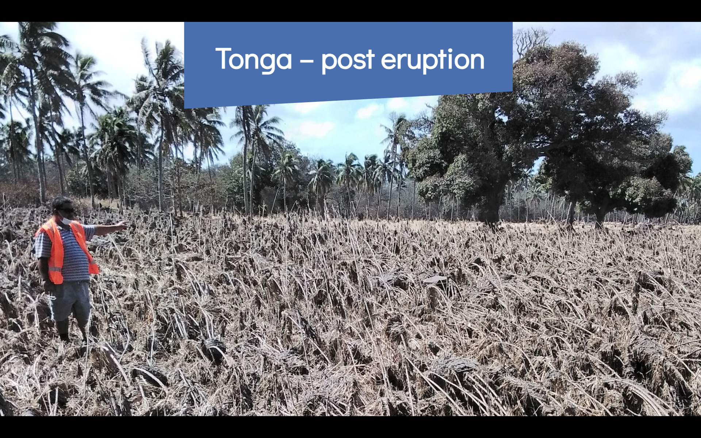
NATIONAL LAND SURVEY
FINLAND
The first country in the world to run national topographic production on fully open source GIS
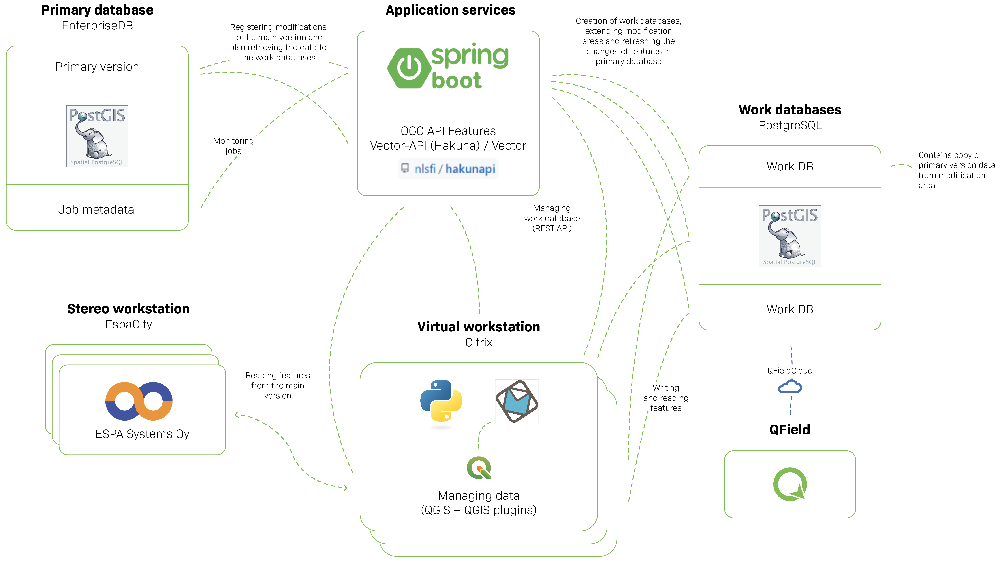
ZIP, NEW ZEALAND
Two-week sync → daily
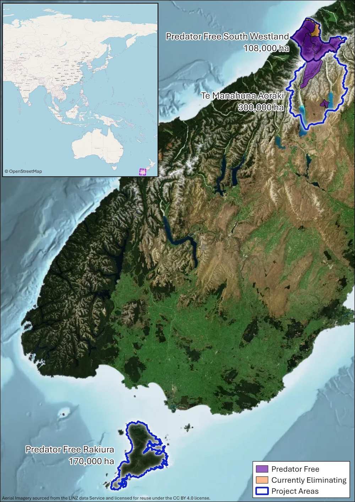
KULTURRETTER
Their camera. Everyone’s camera.
NEPAL FLOODS, AUGUST 2026
Everything offline
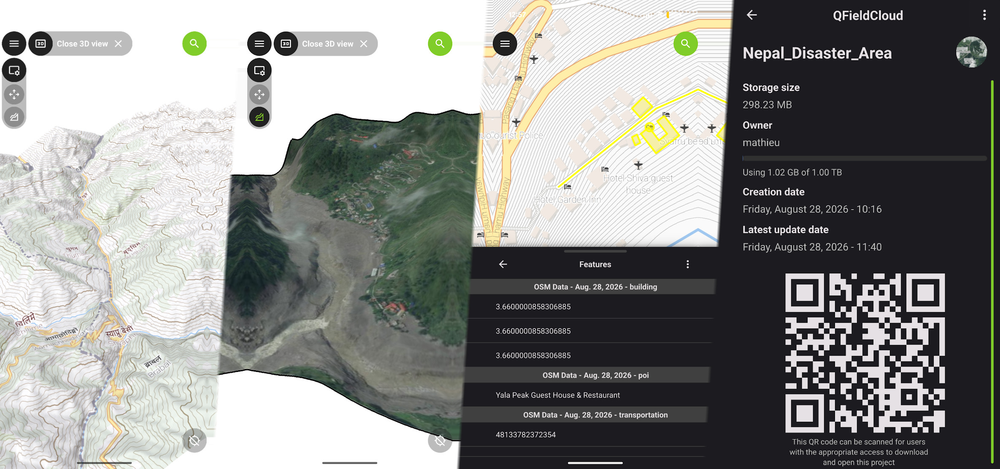
🦊 ANIMALS · 🌳 FORESTS · 🌊 WATERS
Named after what we care about
for big and small challenges
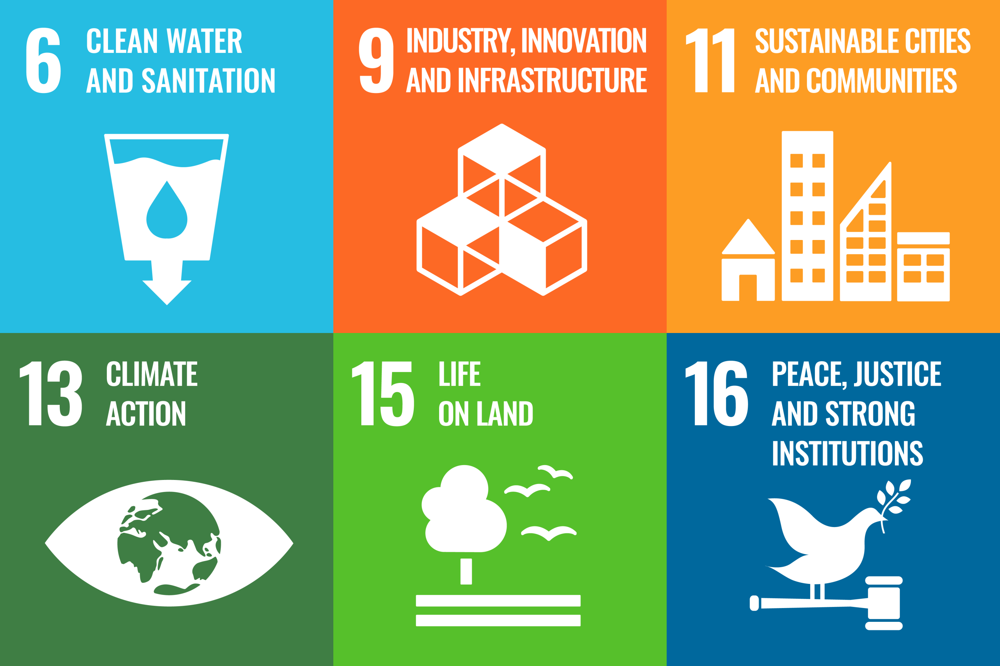
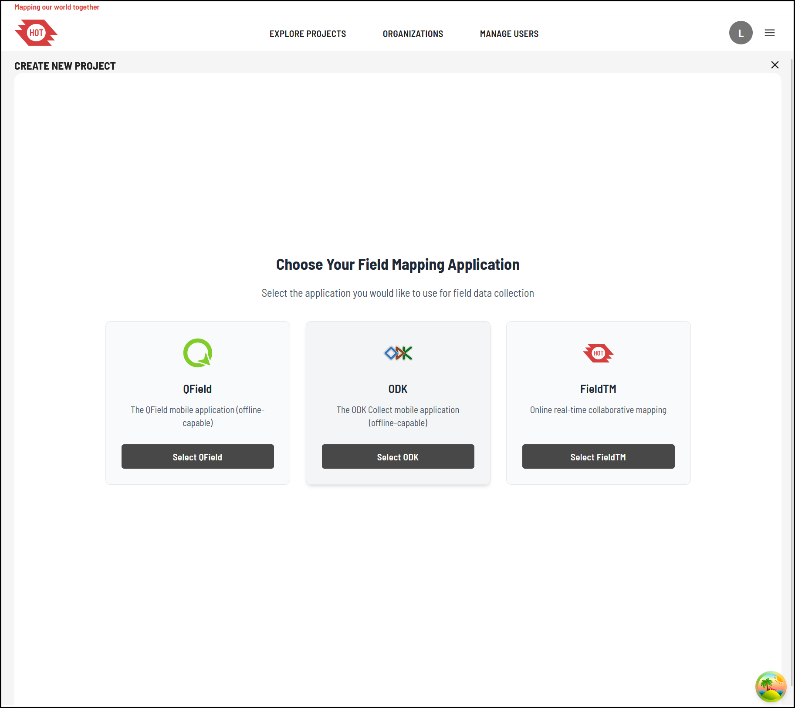
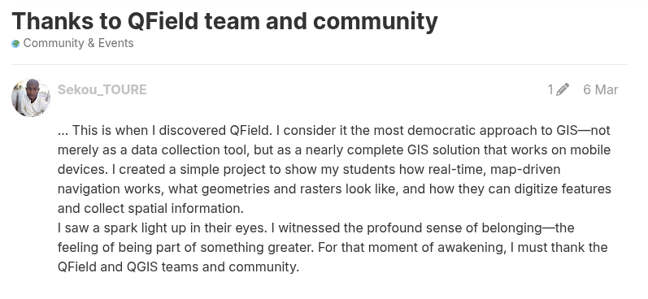
ZERO TO FIELD-READY
IN SECONDS
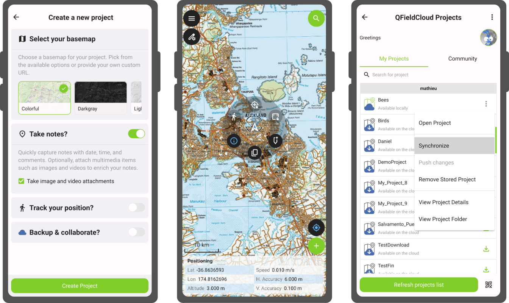
COGO
ON YOUR DEVICE
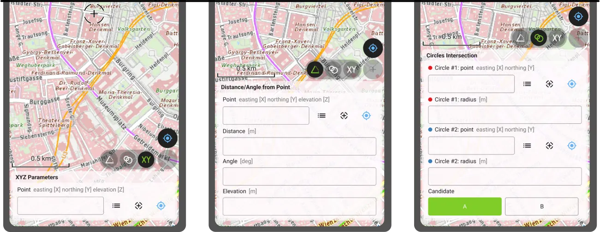
3D
IN YOUR POCKET
NTRIP
CENTIMETRE ACCURACY
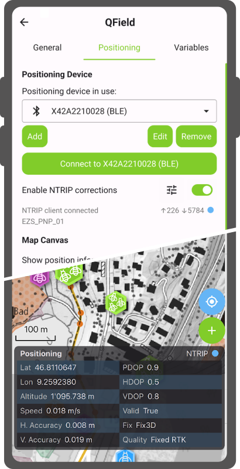
19 QFIELD SESSIONS
+ A FULL QFIELD DAY
Go and discover what people do with QField
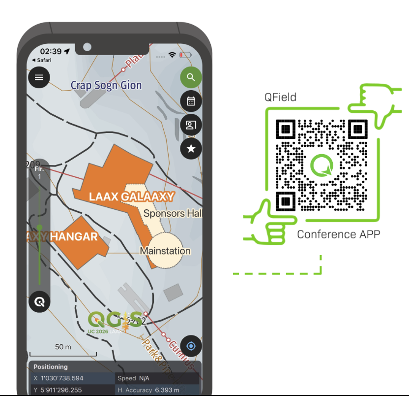
10.01.2034
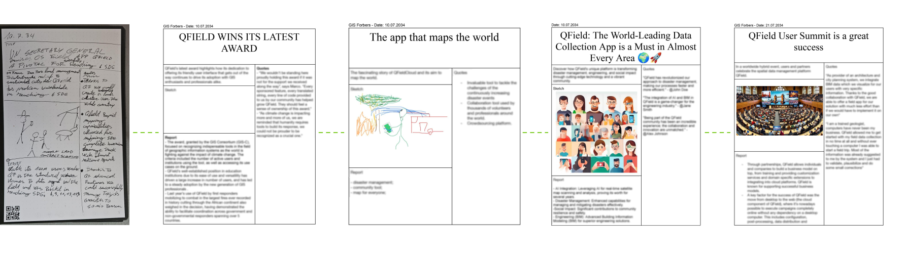
With love
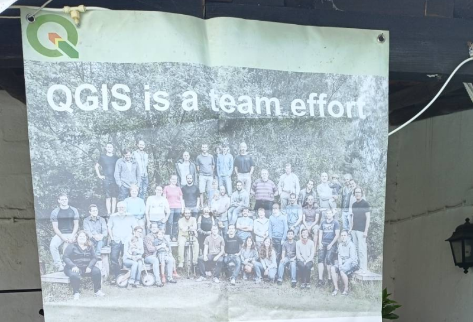